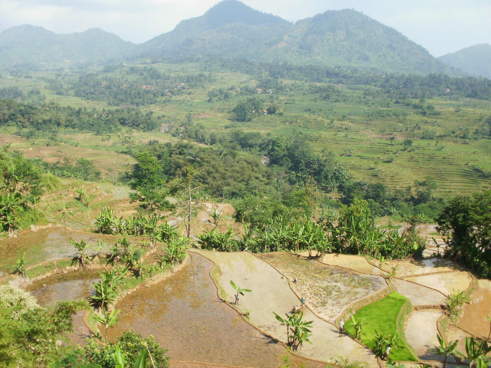

Kecamatan Nanggung
Kecamatan NanggungMalasari
Mahkota ekowisata Bogor barat di kawasan Taman Nasional Gunung Halimun Salak, dengan terasering dan adat Sunda Wiwitan.
23 desa dari lereng Halimun Salak sampai kawasan Puncak, siap menyambut tamu dengan cara masing-masing.
Kecamatan NanggungMahkota ekowisata Bogor barat di kawasan Taman Nasional Gunung Halimun Salak, dengan terasering dan adat Sunda Wiwitan.
 Kecamatan Cisarua
Kecamatan CisaruaAndalan kawasan Puncak: hutan pinus, air terjun berundak, dan komitmen konservasi lewat adopsi pohon.

Kecamatan CiampeaDi kaki Gunung Kapur dengan tebing karst yang eksotis dan keseharian masyarakat agraris.
Pokdarwis, pengelola homestay, dan pegiat desa bisa bergabung untuk pelatihan, sertifikasi, dan promosi bersama.